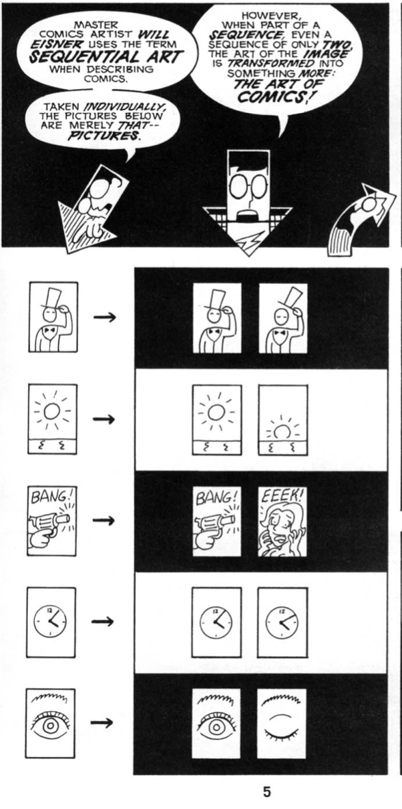
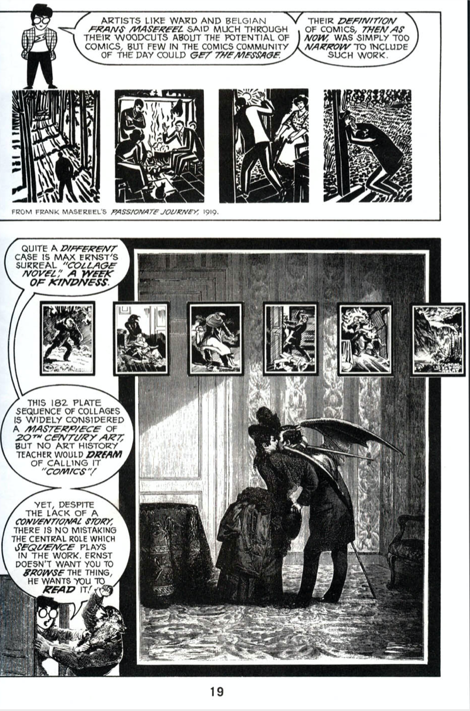
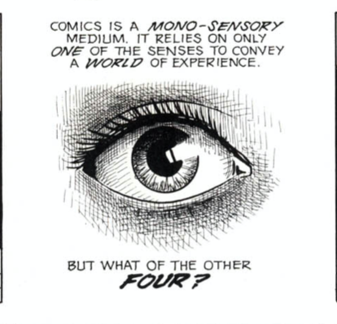
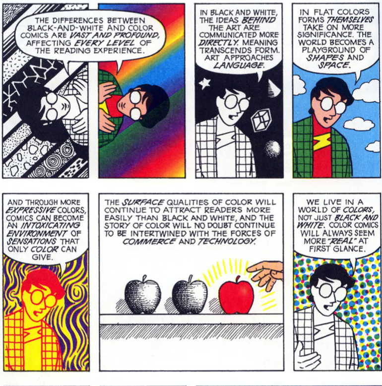
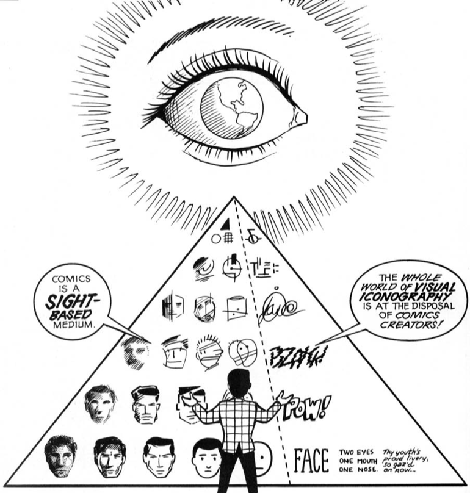
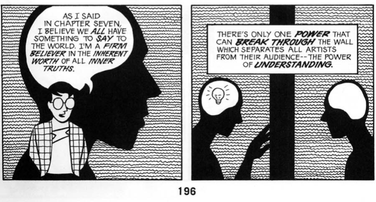

In this comic, McCloud attempts to give his audience an overview of the world of comics. He goes over important aspects, from the basics of what a comic is, the way in which they are presnted, and other attributing factors such as color and its impact on the message. While going through the comic, I had used my previous experience with reading and interpreting comics to help me understand what McCloud was trying to get at. He does a great job at explaining the concepts in a way that anybody (beginnger or advanced) could eeasily understand. In the following sections, I'm going to share my favorite panels and pages!
My Favorite Panels!


The following 2 panels were from Chapter 1, where McCloud was trying to explain the origins of comics
and how different pieces of previous art could also be interpreted as them. I really liked these panels because it showed how easily the message of the piece could be altereed just by the addition of an extra
panel. Showing the second piece of Max Ernst's "Collage Novel", I liked how intricate it was but again, brought out the message of what a comic is. Seeing the emotions in this way truly made a difference. This panel is from chapter 3, which talks about our perceptions of comics and the senses that we use to analyze.
To start off, the first thing that struck me was the drawing itself; it really caught my eye and invited me to learn more. Secondly, the concept that comics are a "mono-sensory medium" really struck me, because I've
never interpreted it in that way. It makes sense to say that we only use our vision but we go forward and use what we see to "entice" our other senses. I think this panel is my absolute favorite, as it talks about the concept of color and comics. Beyond the appeal
of the comic when color is included, the ideas that are being shared here are important. We don't realize how much color excites our differentt senses; in the panel, you see the progression of colors and how every
one provokes a different emotion. When I first saw this panel, it made me expeerience a wide depth of emotions, and it's fascinating because we are talking about a simple concept like color. Being that this last chapter summarizes all the previous concepts together, the following two panels we're chosen
because i believe they eemphasize the most imporrtant points of comics and writing. The picture on the left goes back to the idea of comics being a "mono-sensory medium" but introducing this into a visual concept.
I liked the panel to the right alot because it emphasized the importance of perceptioon and equla understanding of ideas and art, something that people in many areas can relate to. Being able to understand the piece
you're critiquing in your own way is so important because it shows more perspective to what it can actually mean.



